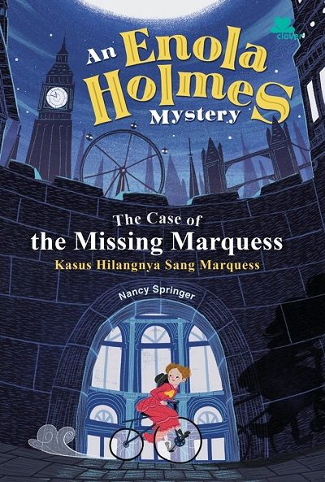
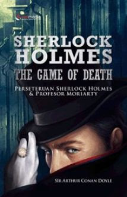
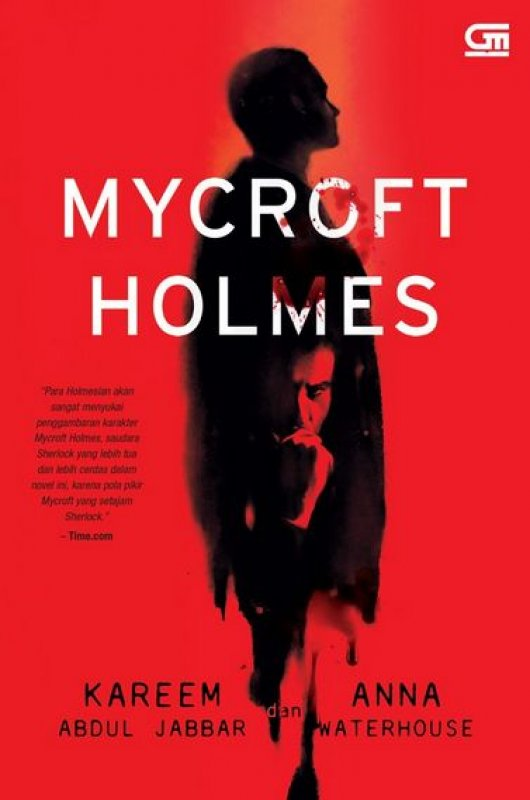

Penulis Buku Nancy Springer Pada Tahun 2006
Buku ini mengisahkan seorang gadis bernama Enola Holmes, yang baru saja berulang tahun ke-16 mengetahui bahwa ibunya hilang secara misterius. Sebelum menghilangnya ibu Enola yang diperankan oleh Helena Bonham Carter, ia meninggalkan hadiah sebuah kode dan decoder sebagai petunjuk untuk menemukan ibunya. Kepergian ibunya yang mendadak membuat kakak-kakak Enola pulang menemui Enola. Sherlock merasa khawatir dengan adiknya, dia mencoba mencari dimana keberadaan ibunya
Mycroft mengusulkan agar memasukan Enola ke sekolah wanita untuk pendidikan dan belajar menjadi wanita kelas atas. Merasa keberadaan kakak-kakaknya akan mengganggu jalanya mencari sang ibu, Enola memutuskan untuk kabur dari rumah dan memecahkan kode yang ditinggalkan sang ibu sendiri. Dalam perjalannya, Enola bertemu dengan Lord Viscount Tewksbury (Louis Patridge) muda yang ternyata memiliki tujuan yang hampir sama yaitu mencari jati diri mereka. Dengan berbagai lika-liku dan kejutan yang ia temukan selama perjalananya, Enola berubah menjadi sosok detektif wanita yang cerdas mengalahkan kakak-kakaknya.
Penulis Buku Sir Arthur Conan Doyle Pada Tahun 1982
Di tahun 1890 London, detektif Swasta Sherlock Holmes bersama John Watson mencegah pembunuhan ritual wanita Lord Henry Blackwood, yang membunuh 5 wanita muda lain dengan cara sama. Inspektur Lestrade bersama polisi menangkap Blackwood. 3 bulan berikutnya, Watson bertunangan Mary Morstan dan pindah 221B Baker Street.Blackwood dijatuhi hukuman mati meminta bertemu Holmes, yang dia peringatkan 3 kematian lagi yang tidak terhentikan yang akan mengakibatkan perubahan besar terhadap dunia. Blackwood selanjutnya digantung. Holmes dikunjungi Irene Adler, mantan musuh yang memintanya mendapati pria yang hilang Luke Reordan.
Penulis Buku Kareem Abdul-Jabbar & Anna Waterhouse Pada Tahun 2015
Mycroft digambarkan memiliki kemampuan deduktif yang jauh lebih unggul daripada Sherlock, tetapi ia tidak mau repot-repot berperan sebagai detektif yang harus turun ke lapangan seperti adiknya untuk memecahkan suatu kasus. Meski awalnya Holmes menjelaskan kepada dr. Watson bahwa pekerjaan Mycroft adalah auditor buku di beberapa departemen pemerintah, dalam kesempatan lain ia mengungkapkan bahwa peran Mycroft dalam pemerintahan jauh lebih penting. Mycroft menghabiskan sebagian besar waktunya di Klub Diogenes yang ikut didirikannya. Dalam kisah Salam Terakhir, Sherlock diperkirakan lahir pada tahun 1854 sehingga Mycroft diperkirakan lahir pada tahun 1847.
